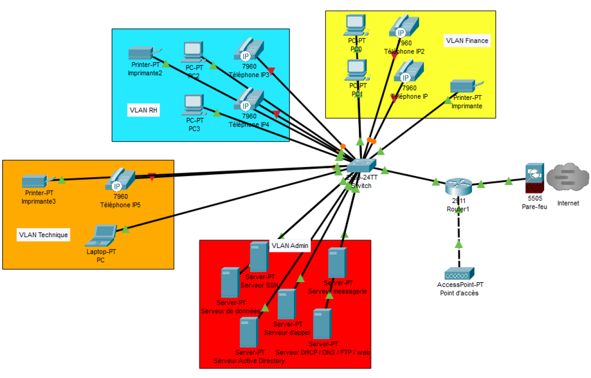
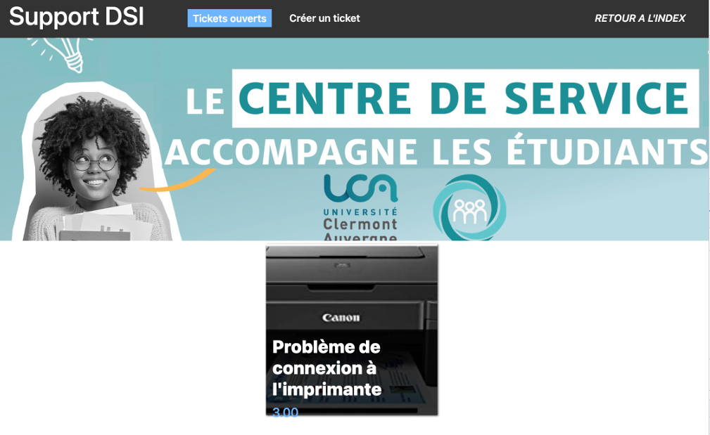
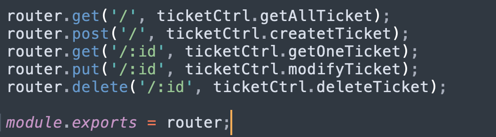
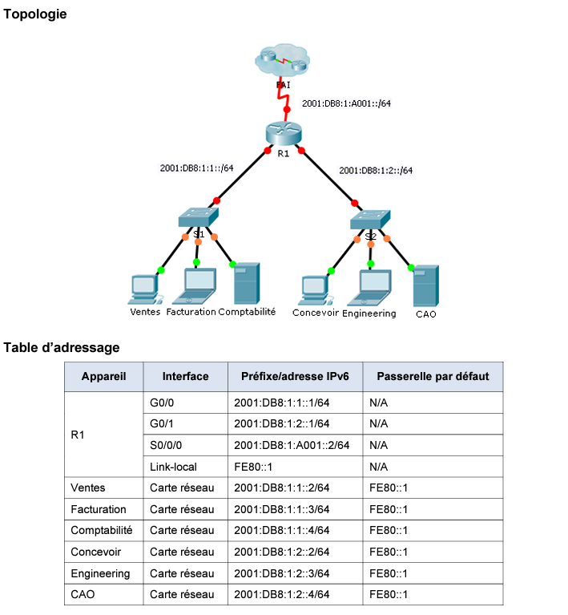
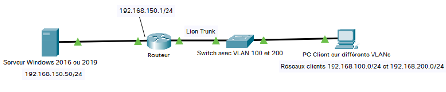

Projets
SAE24 - Projet Intégratif
Contexte : Ce projet a été réalisé en groupe de cinq sous la direction d'un enseignant.
Objectif : Cette SAE a pour objectif d'utiliser l'ensemble des compétences acquises lors du BUT1 dans la mise en place d'un réseau fonctionnel pour une petite entreprise.
Travail réalisé : Dans un premier lieu, nous avons rédigé un document contenant l'ensemble des besoins de l'entreprise ainsi que les solutions techniques.
Ci-dessous, un schéma du réseau avec les équipements minimum que nous devons mettre en place pour répondre aux besoins de l'entreprise.

Ensuite, nous devions réaliser ce projet à l'aide de quatre ordinateurs, des serveurs (DHCP, DNS, web...), un routeur, un switch avec VLANs, un point d'accès wifi, des téléphones (physiques et virtuels) ainsi qu'un pare-feu. Cet ensemble d'équipements nous permet de mettre en place ce réseau d'entreprise fonctionnel, tout en garantissant une fiabilité et une sécurité élevées.
Résultat : Nous sommes parvenus à rendre notre réseau fonctionnel avec une gestion efficace des groupes d'utilisateurs grâce à Active Directory, ainsi que
des logiciels préinstallés sur les postes de travail, un serveur d'appel, un analyseur de logs pour se protéger des attaques DHCP, un intranet permettant l'accès à la documentation et aux informations de l'entreprise, un service d'échange de fichiers, ainsi qu'un serveur mail interne à l'entreprise.
SAE23 - Mettre en place une solution informatique pour l’entreprise
Contexte : Travail réalisé seul sous la direction d'un enseignant.
Ojectif : Développer en Full Stack une application de support informatique pour l'université. Il faut qu’un utilisateur puisse créer un ticket de support puis suivre l’avancement du traitement de son ticket. L’administrateur peut lui consulter les tickets, établir des ordres de priorité et les affecter aux techniciens. Ce projet a été réalisé en grande partie en JavaScript.
Travail réalisé : Il faut tout d'abord réaliser la partie Frontend permettant un affichage côté client comme le montre l'image ci-dessous où l'on peut également apercevoir un ticket créé pour un problème d'imprimante.

Ensuite, j'ai programmé la partie Backend et j'ai créé une base de données permettant de stocker les tickets avec MongoDB. J'ai également mis en place un serveur à l'aide d'Express. La difficulté principale ici résidait dans l'optimisation du code JavaScript nécessitant la création de plusieurs dossiers et fichiers reliés entre eux. Cela m'a permis d'apprendre comment mettre en place une application en Full Stack en utilisant des moyens d'optimisation courament utilisés dans le monde de l'entreprise pour rendre le code plus compréhensible.
Ci-dessous un extrait de code que j'ai écrit pour appeler des fonctions JavaScript présentes dans d'autres fichiers à des fins d'optimisation.

Résultat : Je suis ainsi parvenu à rendre mon application fonctionnelle. Un utilisateur peut créer, supprimer et modifier ses tickets. L'administrateur peut lui avoir accès aux tickets afin de répondre à la demande.
SAE21 - Construire un réseau informatique pour une petite structure
Contexte : Travail réalisé seul et en binôme sous la direction d'un enseignant.
Objectif : Etre capable de concevoir un réseau informatique moderne.
Travail réalisé : Premièrement, de façon autonome, nous avons appris à travers Packet Tracer la configuration d'un réseau sous l'adressage IPv6, le fonctionnement des protocoles TCP et UDP, ainsi que le système IPTABLES.
Ci-dessous un exemple de topologie réseau que nous avons dû configurer avec IPv6.

Par la suite, nous avons utilisé ces connaissances théoriques lors de travaux pratiques en binôme pour les appliquer dans un réseau réel. Nous avons de plus appris à configurer des serveurs (notamment DHCP et DNS) et des clients (SSH et FTP).
L'ensemble de ces compétences couplé à un savoir théorique plus approfondi grâce à d'autres projets de réseau, nous a permis de concevoir des réseaux similaires à la topologie ci-dessous.

Résultat : J'ai finalement réussi à configurer ce réseau et à le rendre fonctionnel. J'ai pu m'en assurer grâce à des tests de fonctionnement dont des ping et des captures de données à l'aide du logiciel Wireshark.